https://etherpad.wikimedia.org/p/607-t_tests
Outline
- Statistical Golems, Z, and T
- T-tests in context: Paired data
- Comparing Means with a t-test
Statistical Golems

The Z-Test
- Let’s assume I have a BOX of 15 Corgis. I suspect fraud.
- I get the average chest hair length of each Corgi - but are they different?
- So, we’re interested in the difference between my sample mean and the population mean: \(\bar{X} - \mu\)
\[\Large H_o: \bar{X} - \mu = 0\]
When & How to use Z-Test
1. I have a known population mean (\(\mu\)) and standard deviation (\(\sigma\))
2. I can calculate a population SE of any estimate of the mean, \(\frac{\sigma}{\sqrt{n}}\)
3. Now calculate a test statistic
\[\Large z = \frac{\bar{X} - \mu}{\sigma_{\bar{X}}}\]
This is a Golem
\[\LARGE z = \frac{\bar{X} - \mu}{\sigma_{\bar{X}}}\]
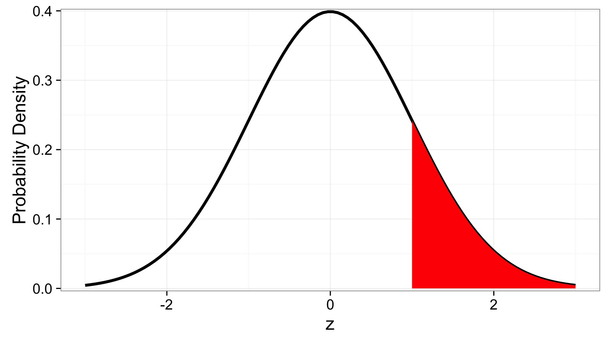
- What is my data generating process?
- What is my error generating process?
What Drives my Golem?


Is this a Good Golumn for Realistic Sample Sizes?
Is this a Good Golumn for Realistic Sample Sizes?
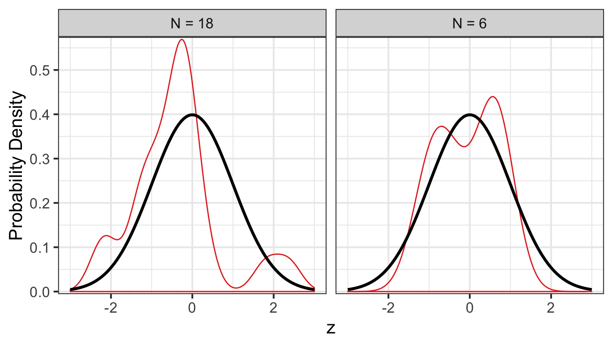
- Fat tails, leptokurtic, but better with higher n

A T-Distributed Golem

T Versus Normal
- A Normal Distribution is defined by a mean and a SD
- Both assume this data and error generating process
- Both assume this data and error generating process
- A T-Distribution assumes a mean of 0, a SD of 1, but changes shape based on its Degrees of Freedom
Degrees of what?
- Let’s say you estimate a mean
- Mean = (x1 + x2 + x3)/3
- If you know the mean, x1, and x2, you can calculate x3 - DF = N-1
- How much unique information is there in calculating a parameter?
- Will also hear this called # of free parameters
DF and Distribution Shape
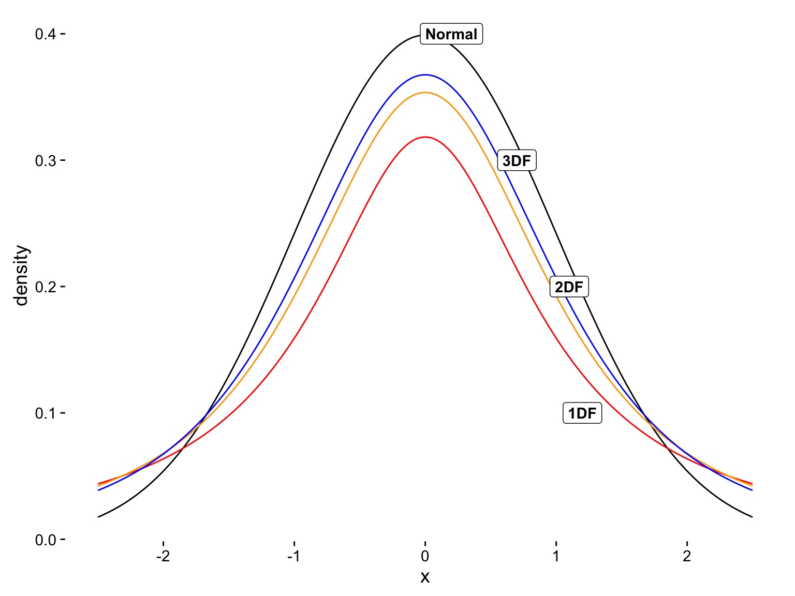
Using our T Statistic

- To test for difference from 0, we assume \(\mu = 0\)
- But other conditions can be used to look at differences
Outline
- Statistical Golems, Z, and T
- T-tests in context: Paired data
- Comparing Means with a t-test
Comparing Paired Groups
\(H_0\): Difference = 0

- \(\bar{x_d}\) is the mean difference between paired samples
- Evaluate against T Distribution with n-1 Degrees of Freedom
- n = # of pairs
Does bird immunococompetence decrease after a testosterone impant?

Differences in Antibody Performance
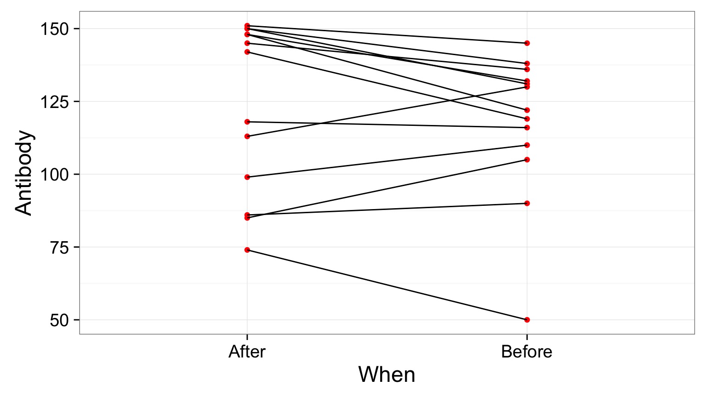
What’s The Difference?
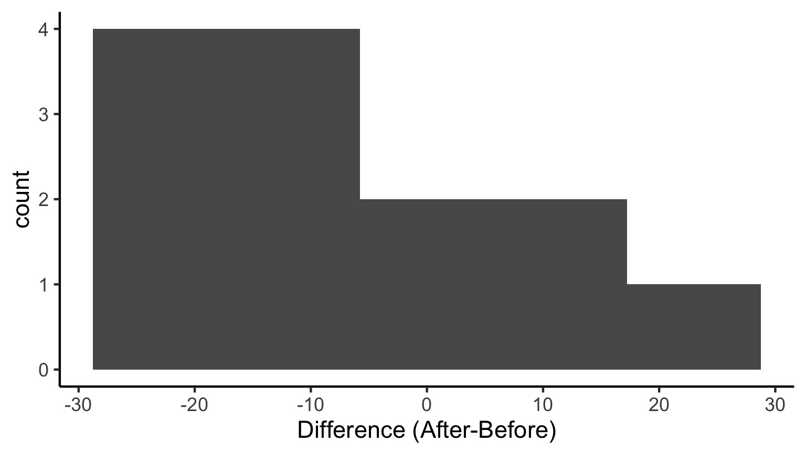
Does this look normal?
Evaluating Your Golem: Assumptions
- Before we look at p-values and all that, we need to test assumptions
- What assumptions does a t-test make?
- Ask, what is the data generating process? Does our data satisfy it?
- Ask, what is the error generating process? Is it valid?
- Single mean, normal error
Assessing Normality
- There are many ways…
- Our visual inspection could be sufficient
- Visual inspection of QQ plots
- Formal tests (e.g., Shapiro Wilks)
- Can be too sensitive, type I error
The QQ Plot
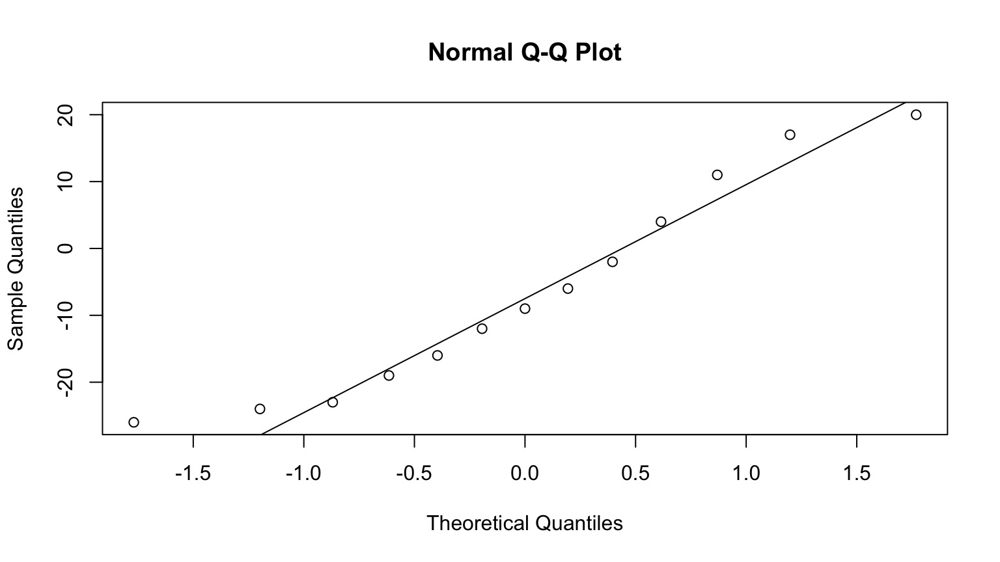
What does this mean?
Quantiles of a Normal Distribution
We’re familiar with quantiles - let’s say you have a normally distributed random variable:
0% 25% 50% 75% 100%
-3.78067252 -0.67818866 -0.01041209 0.67146298 3.61989650 There are many quantiles - all numbers between between 0% and 100%
0% 10% 20% 30% 40% 50%
-3.78067252 -1.26370725 -0.84012734 -0.53748706 -0.26382446 -0.01041209
60% 70% 80% 90% 100%
0.25880431 0.52504744 0.83012841 1.28781239 3.61989650 We Can Event Plot the Quantiles of a Normal Distribution
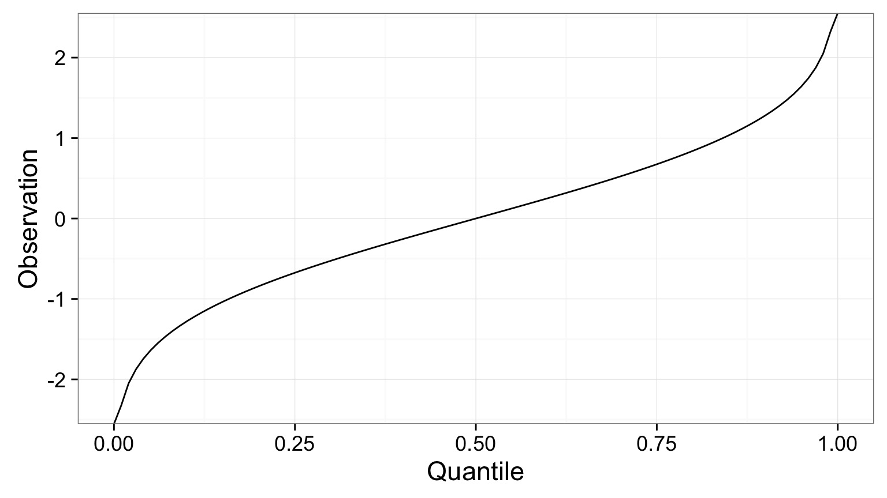
N.B. Quantiles are the 1-tailed P-Value!
Our data has Quantiles
0% 8.333333% 16.66667% 25% 33.33333% 41.66667% 50%
-26 -24 -23 -19 -16 -12 -9
58.33333% 66.66667% 75% 83.33333% 91.66667% 100%
-6 -2 4 11 17 20 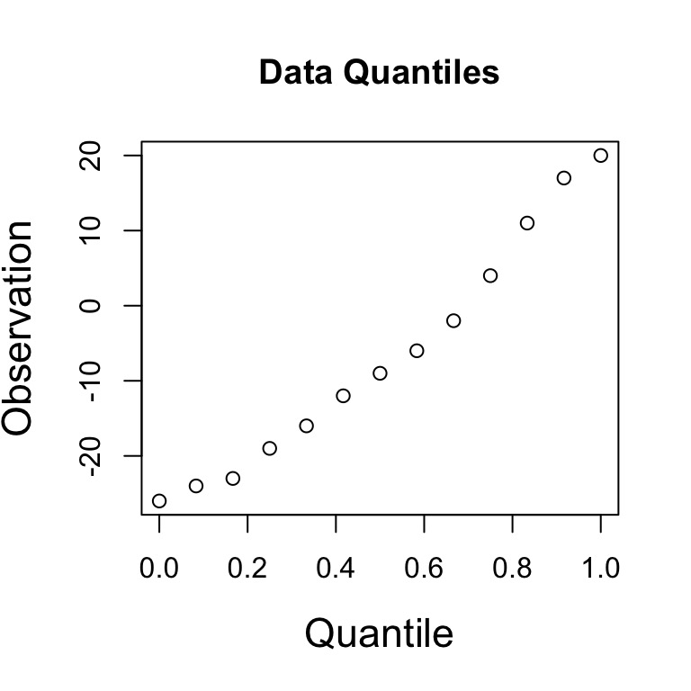
A Normal QQ Plot shows these values plotted against the corresponding quantiles of a Normal Distribtion
The QQ Plot
If these values were normally distibuted, there would be a linear relationship, as the pattern of quantiles would be the same.
Our Golem Is Angry: What to Do about Assumption Violations
- Choose a different Golem
- Choose a different distribution
- Non-parametric tests (lower power)
- Apply a tranformation to the data to meet assumptions
Difference on a Log Scale
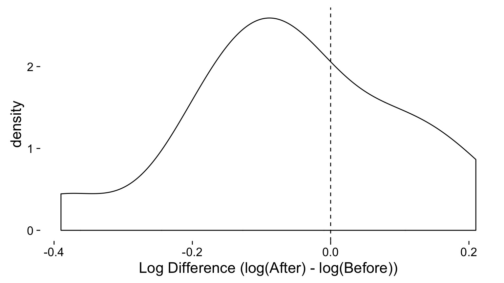
estimate statistic p.value parameter method alternative
1 -0.05615385 -1.271409 0.2276739 12 One Sample t-test two.sidedGeneral Testing Workflow
- Build a Test
- Evaluate Assumptions of Test
- Evaluate Results
- Visualize Results
Outline
- Statistical Golems, Z, and T
- T-tests in context: Paired data
- Comparing Means with a t-test
Horned Lizard Survivorship

Horns prevent these lizards from being eaten by birds. Are horn lengths different between living and dead lizards?
The Data
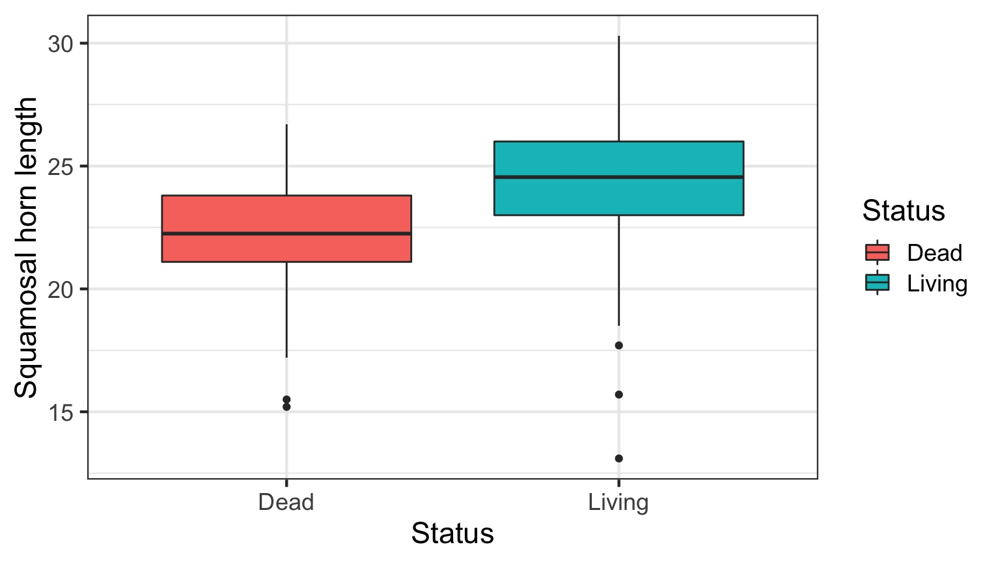
What is the data generating process?
Data Generating Process as a Model
\[Horn\: Length_{ij} = \beta_i\]
\[\beta_i = Horn\: Length\, for\, group\: i\]
Error Generating Process in the Model
\[Horn\: Length_{ij} = \beta_i + \epsilon_j\]
\[\beta_i = Horn\: Length\: for\, group\: i\]
\[\epsilon \sim N(0,\sigma)\]
The Unpaired T-Test
\[\LARGE t = \frac{\bar{x_1} - \bar{x_2}}{s_{12}\sqrt(n)}\]
s12 is a pooled standard deviation:
\[\large s_{12} = \sqrt(s_1 + s_2)\]
Evaluating Error Generating Process
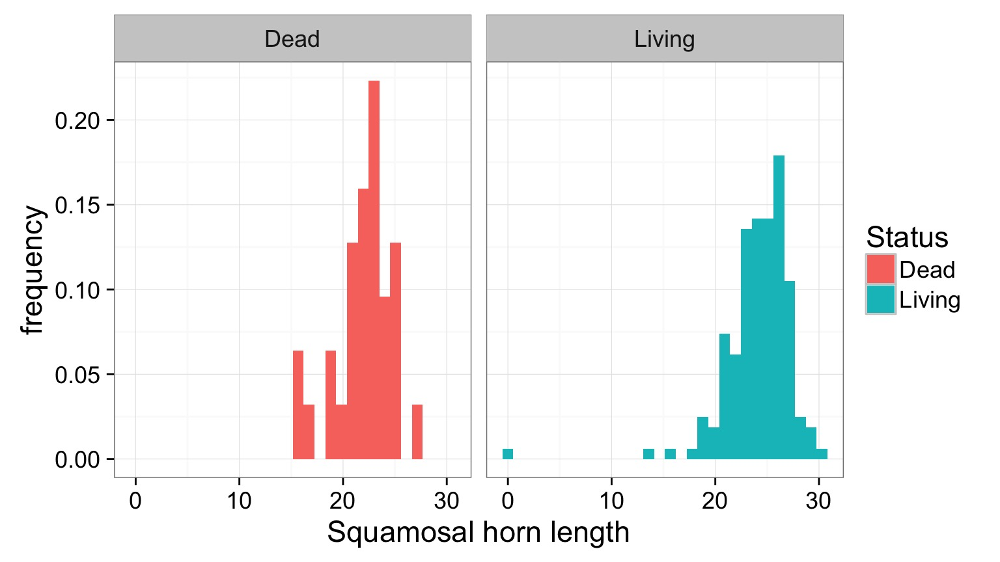
Evaluating Residuals for Normality
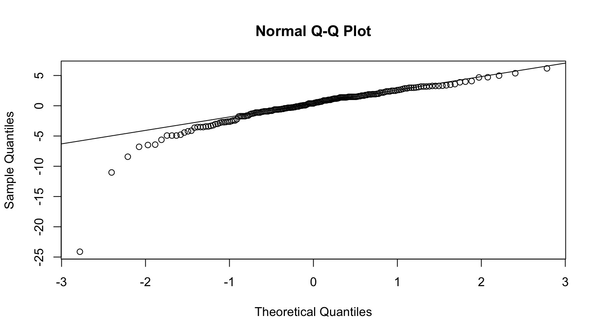
Unequal Sample Size?
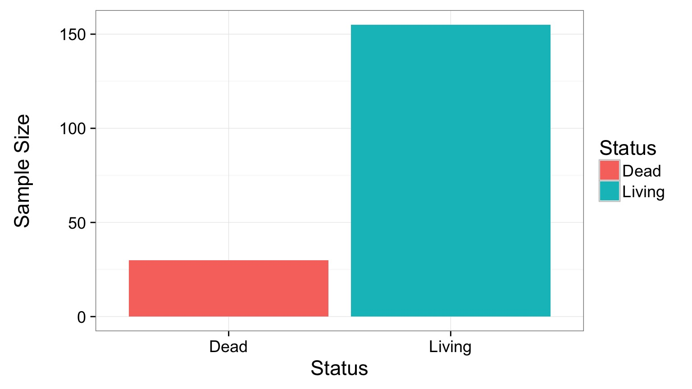
There’s a formula for that!
Troubleshooting Your Golem
Unequal Sample Sizes - Alternate Formula for Denominator
Unequal Population Variances - Welch’s T-Test (different denominator and DF)
Residuals Not Normal - Transform - Non-Parametric Test - Golem with a different error structure
OK, Evaluate the Results!
Welch Two Sample t-test
data: Squamosal horn length by Status
t = -3.8175, df = 46.93, p-value = 0.000394
alternative hypothesis: true difference in means is not equal to 0
95 percent confidence interval:
-3.264484 -1.011215
sample estimates:
mean in group Dead mean in group Living
21.98667 24.12452 Visualization
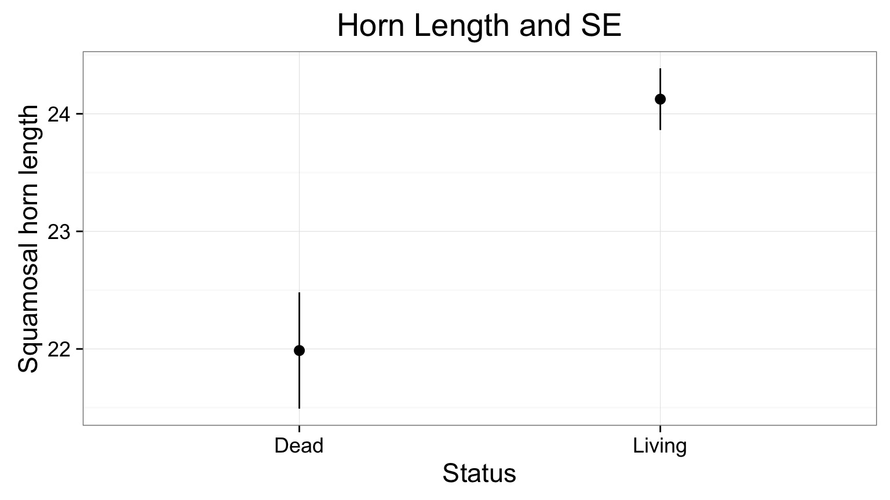
What is being shown here?
T-tests
| Test | Purpose | Assumptions |
|---|---|---|
| 1 sample t-test | Tests whether the mean of a sample is equal to a target value | Normality of population |
| 2 sample t-test | Tests whether the the means of two independent samples are equal | Normality, Equal Variance, Equal Sample Size |
| Paired t-test | Tests whether the mean of the differences between paired observations are equal | Normality of difference |
Wrap-Up
- Even if the world is normal, your sample isn’t
- Statistical models are just that - you have to build them
- Guiness has given us many ways to handle testing one or two means